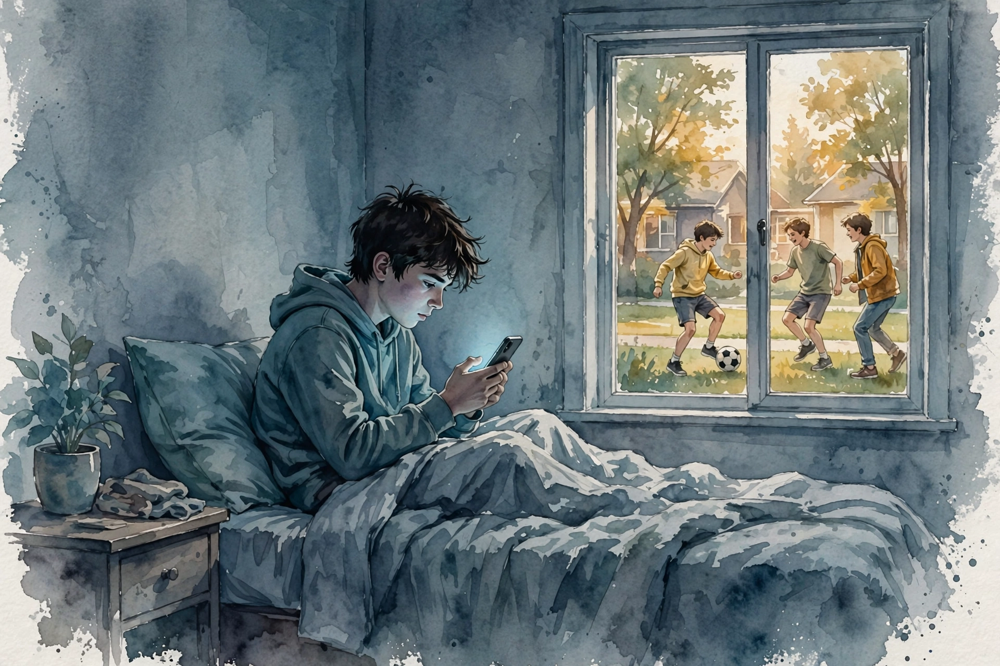
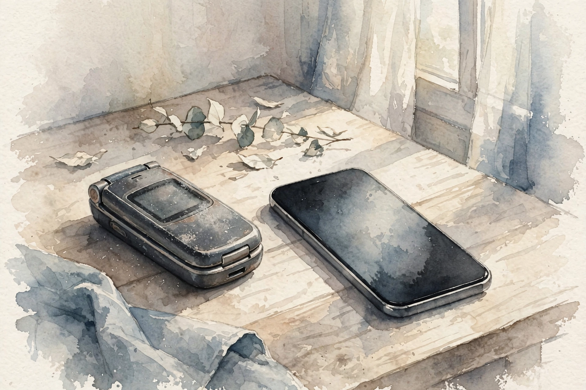

Huberman Lab · Episode Companion
Smartphones & Social Media
Social psychologist Jonathan Haidt, author of The Anxious Generation, makes the case that childhood was rewired between 2010 and 2015, and the graphs show exactly when. This companion follows the evidence and his four norms for breaking out of the trap.

Illustration. Inside with the phone, outside without it. AI-generated watercolor made for this page.
Watch. The official Huberman Lab episode video. Use the chapter menu above to move through this companion as you listen.
The Wisdom Index: every nugget in this companion
~00:01
Intro: The Puzzle
Huberman introduces Jonathan Haidt, social psychologist at NYU and author of The Anxious Generation. The puzzle that drives the episode: youth mental health collapsed in the 2010s, and the timing is suspiciously precise. The question is when it started, and what arrived at exactly that moment.
Haidt's answer is a natural experiment. Take January 2010 and compare it to 2015, and you can watch childhood get rewired in real time.
~00:10
January 2010: The Tool

Illustration. 2010: the flip phone as a tool. 2015: the smartphone as an environment. AI-generated watercolor made for this page.
Picture a teenager in January 2010. There is no Instagram. There is no front-facing camera. The iPhone came out in 2007, but most teens do not have one. They have flip phones, and they use them as a tool: call each other, text each other, meet up. When technology helps us achieve our goals, Haidt says, that is good.
The flip phone could not hold a teenager for ten hours a day. Nobody could do that with a flip phone. The device served the plan. The plan did not serve the device.
Nugget 1 · Before
The tool became the trap
What happened. In 2010 the flip phone was a tool for calling, texting, and meeting up. Nobody could spend ten hours a day on it.
Why it matters. The question is not whether technology is good. It is whether the device serves your goals or replaces them.
The principle. Judge every device by the 2010 test: does it help you meet up, or keep you from it?
~00:12
2015: The Environment
By 2015 everything is different. The great majority of teens have a smartphone with a front-facing camera. The girls are mostly on Instagram, the first social media platform you had to be on a smartphone for. High-speed internet, unlimited texting, and now it is possible to spend 10 to 15 hours a day on the phone.
Haidt points to that five-year period, 2010 to 2015, and names it the Great rewiring of childhood
, because it affects everything about what children and teenagers do. He remembers his own first smartphone in New York City: up at 1:30 in the morning scrolling, thinking this is unbelievably addicting
. He now thinks of it less as addicting and more as an OCD of sorts.
Nugget 2 · Rewiring
Five years rewired childhood
What happened. Between 2010 and 2015, the flip-phone tool became the smartphone environment: front-facing cameras, Instagram, unlimited texting, 10 to 15 hours a day possible.
Why it matters. Five years is one childhood. An entire generation's habits were rebuilt inside a single developmental window.
The principle. Big harms do not need big causes. They need a plastic brain and five years.
~00:15
The Hockey Stick
Like somebody turned on a light switch in 2012.
Jonathan Haidt · Episode ~00:15
The graphs are the argument. Before the collapse, around 12 to 15 percent of girls qualified as having had a major depression. The lines run pretty flat until around 2012, and then all of a sudden the lines for girls go up like a hockey stick. It is not subtle. There is an elbow.
Internationally the pattern repeats, not always in 2012, but the girls' graphs are very sharp everywhere. The boys are up too, on depression and anxiety, but their curves are smoother, beginning more like 2009 or 2010 and rising gradually. Haidt calls that difference a real clue to the two different stories.
Girls' depression: flat, then a hockey stick
Stylized after the episode's graphs. Direction and timing per Haidt. Not plotted from his dataset.
Source: Huberman Lab, Smartphones and Social Media, ~00:15. Graph shape and timing per Haidt. Stylized, not plotted from the dataset.
Nugget 3 · Evidence
The hockey stick
What happened. Girls' depression ran flat at 12 to 15 percent until about 2012, then turned up like a hockey stick, with an elbow like a light switch.
Why it matters. Sudden, synchronized collapse across countries points at a shared cause, not a slow drift.
The principle. When every graph elbows at once, look for what arrived at the elbow.
Nugget 4 · Scale
Close to a doubling
What happened. Across measures, youth mental-health harms rose in the ballpark of 50 to 150 percent. Haidt stresses: close to a doubling
, not the 10 or 20 percent of ordinary noise.
Why it matters. A doubling is not a trend. It is a different world.
The principle. Do not normalize the new baseline. The old one was the healthy one.
~01:50
The Four Norms
Illustration. Norm four: independence, free play, responsibility in the real world. AI-generated watercolor made for this page.
Haidt offers four norms to break out of the trap, and he stresses they are norms, not just personal rules. A norm works because everyone follows it: no child is the odd one out.
The four norms
Per Haidt. The first two buy time through the plastic years.
Source: Huberman Lab, Smartphones and Social Media, ~01:50. The four norms per Haidt.
Norm one: no smartphone before high school. A flip phone, a simple watch phone, is fine. Do not give a child the entire internet in their pocket, and do not let the entire world reach your child whenever it wants. Norm two: no social media until 16. Haidt believes there is no way to make social media safe for children: it turns them into brand managers, performative instead of playful, exposed to things no child should see.
Norm three is phone-free schools. Norm four is the hardest and the most important: far more independence, free play, and responsibility in the real world. Kids need adventure. The first two norms delay the phone through the years of maximum plasticity. The last two rebuild the real world the phone replaced.
Nugget 5 · Norms
No smartphone before high school
What happened. Norm one: no smartphone of their own before high school. A flip phone is fine. The internet does not belong in a child's pocket.
Why it matters. A pocket internet means the world can reach your child at any hour. Delay is protection.
The principle. Give the tool, not the environment. Flip phones came out fine.
Nugget 6 · Norms
No social media until 16
What happened. Norm two: no social media until 16. It makes children brand managers, chasing likes and followers instead of play.
Why it matters. Prestige economies are not playgrounds. Performance replaces playfulness.
The principle. Childhood is for play, not personal branding. Hold the line at 16.
Nugget 7 · Norms
Phone-free schools, free play
What happened. Norm three: phone-free schools, which kids themselves say they want. Norm four: far more independence, free play, and responsibility in the real world.
Why it matters. Norms work because everyone follows them. No child is the odd one out.
The principle. Rebuild the real world. Adventure is the antidote.
Nugget 8 · Timing
Delay through the plastic years
What happened. The first two norms buy time through the period of maximum brain plasticity. Get past late puberty before the phone arrives.
Why it matters. The rewiring hit hardest when brains were most plastic. Delay is not avoidance. It is a question of timing.
The principle. Protect the plastic years. The adult brain can handle what the child brain cannot.
The episode in seven lines
- In January 2010, the phone was a tool: call, text, meet up. Nobody spent ten hours a day on a flip phone.
- By 2015, the tool became an environment: front-facing cameras, Instagram, unlimited texting, 10 to 15 hours a day.
- 2010 to 2015 was the Great Rewiring of Childhood. Five years, one generation.
- Girls' depression ran flat at 12 to 15 percent, then turned up like a hockey stick around 2012.
- The increases run 50 to 150 percent: close to a doubling, not ordinary noise.
- The four norms: no smartphone before high school, no social media until 16, phone-free schools, and real-world independence and free play.
- Delay through the plastic years. Then rebuild the world the phone replaced.
Distilled from Huberman Lab, Jonathan Haidt on Smartphones and Social Media (~2h27m). Full episode: youtube.com/watch?v=csubiPlvFWk. The graphs and the four norms are Haidt's from The Anxious Generation. Timestamps marked ~ are proportional estimates from transcript position. They may be off by a few minutes.